- liquid
- area
- gas
- sense
- what
- fluid
- glass
- sphere
- say
- sphere
- say
- cubic
- change
- shape
- looks
- also
- fill
- was
- two
- those
- of

- air
- baloon
- could
- incompressible
- filled
- balloon
- be
- no
- able
- liquid
- actually
- into
- motion
- see
- even
| MIT201x (15:31) | Pentimento Diffraction (2:31) |
| 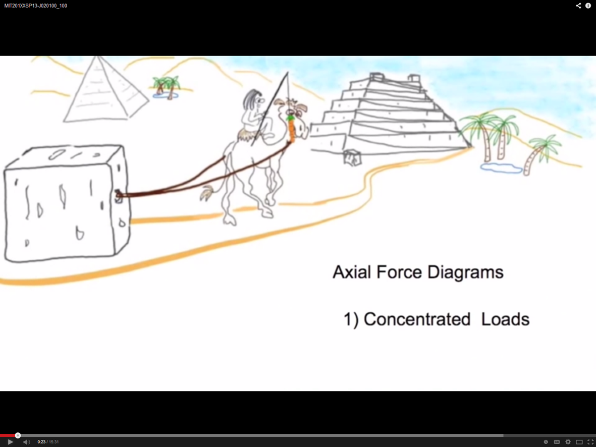 | 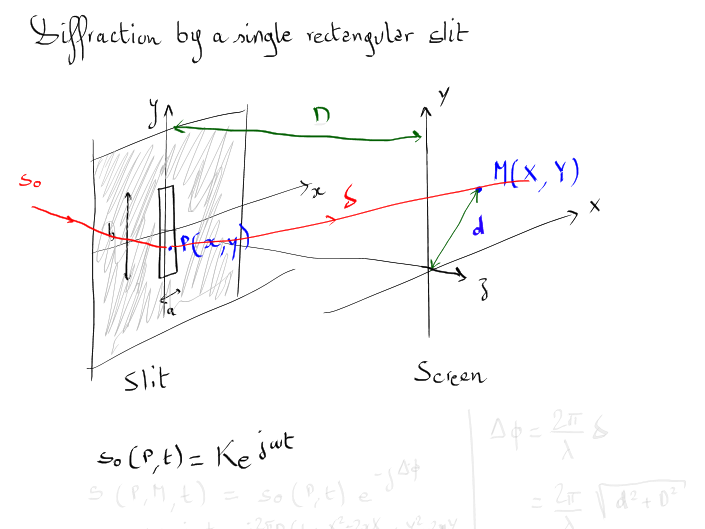 |
| 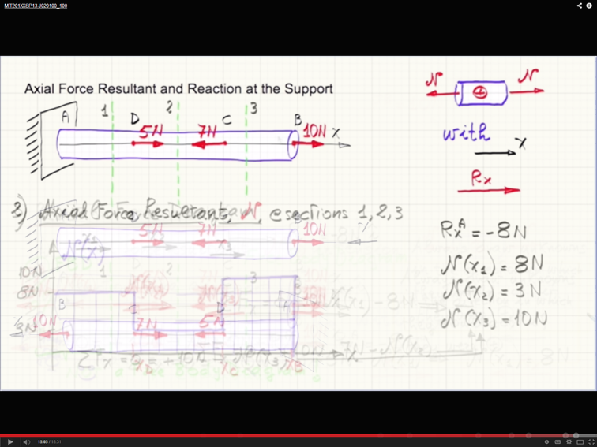 | 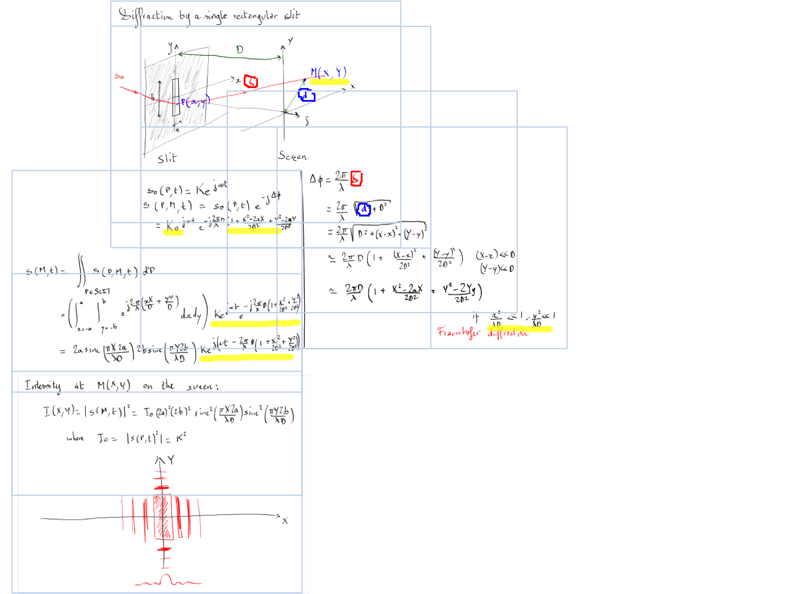 |
| Superimpose everything in global coordinates. Blue square on the right image indicate camera movement. (1) Take a snapshot each time right before a significant part of the screen is erased. (2) Adjust transparency and overlay. (3) Remove mouse pointer movement, and ignore transition when instructor copies and moves element (ignore elements that appear less than epsilon seconds). | |
| Before | |
| 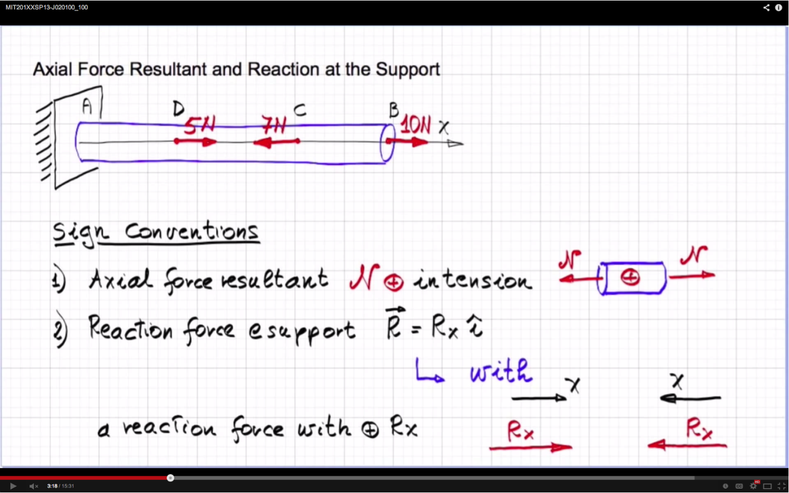 | |
| After | |
| 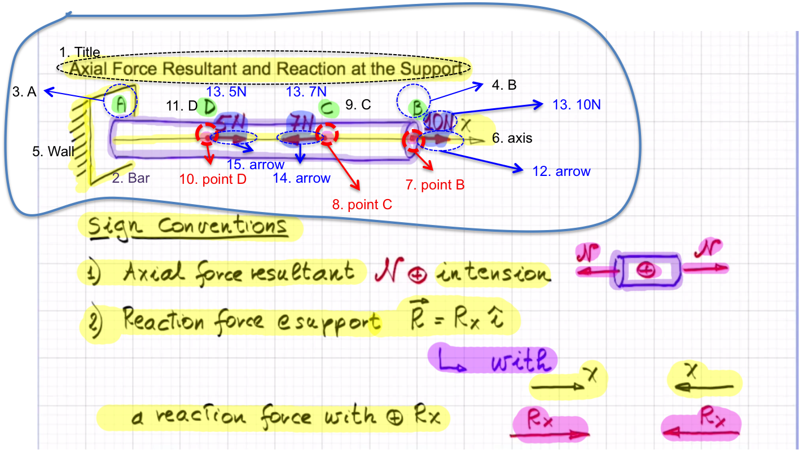 | 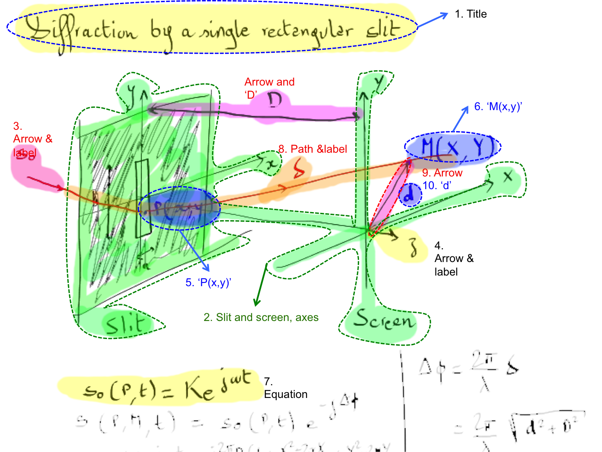 |
| Identify individual elements and their order using time, spatial distance, and color. Naming is just for convenience; it is not an output at this stage.(Left)The selected part consists of 17 different elements. 1)Title, 2)Bar, 3)letter 'A', 4)letter 'B', 5)Wall, 6)axis, 7)point B, 8)point C, 9)letter 'C', 10)point D, 11)letter 'D', 12)arrow at B, 13)'10N', 14)arrow at C, 15)arrow at D, 16)'7N', 17)'5N' | |
| 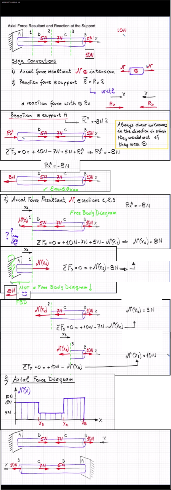 | 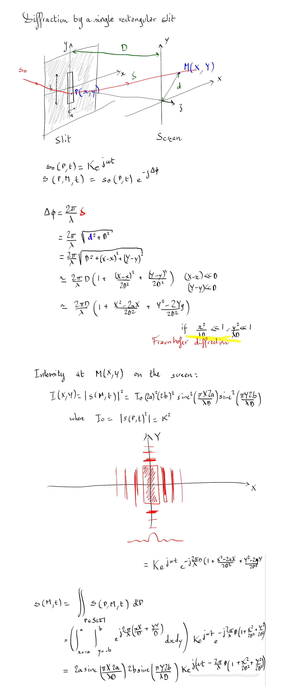 |
| Adjust layout of elements vertically in sequential order, removing layouts. Move elements that overlap vertically downwards until it does not overlap. Borders (left) are there to identify which elements were moved. They are not part of the output. | |
April 6. 2014 High Level:
| 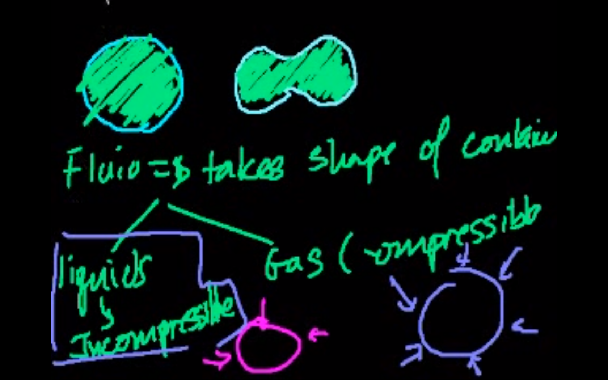 | (*Gutenberg)
| |
| Let's learn a little bit about fluids so - you probably have some notion of what a fluid is, but let's talk about it in the physics sense or maybe even in the chemistry sense depending on what context you are watching this video- So a fluid is anything that takes the shape of it's container |
| |
| 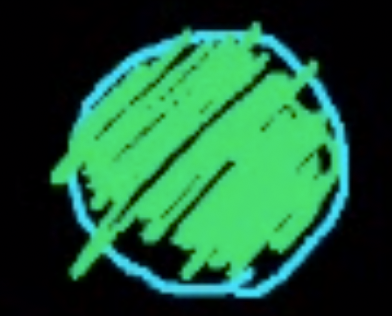 | for example if I had a glass sphere Let's say I completely fill this glass sphere with water I was going to say we were in a zero gravity environment, |
|
| but you really don't need that let's say that every cubic centimeter or cubic meter of this glass sphere is filled with water and let's say it's not of glass, let's say it's a rubber sphere if I were to change the shape of that sphere but not change the volume |
| |
| 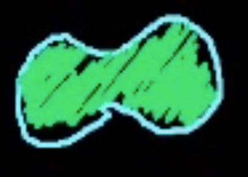 | If I were to change the shape of the sphere so it looks like this now the water would just change its shape with the container |
|
| in this case I have green water and the same is also true if that was oxygen if that was just some gas, right? It would fill the container and in this situation it would also fill the the newly shaped container. |
| |
| 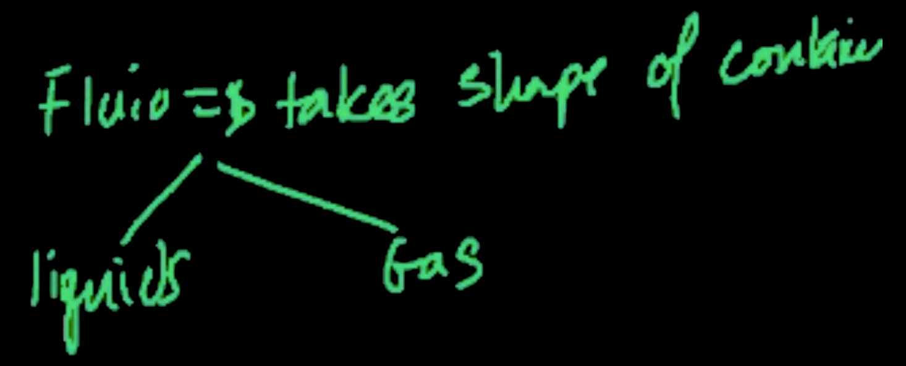 | So a fluid, in general, takes the shape of the container. I just gave you two examples of fluids: You have liquids and you have gases. Those are two types of fluid. Both of those things take the shape of their container. What's the difference between a liquid and a gas, then? |
|
| Well, a gas is compressible, which means that I could actually decrease the volume of this container and the gas would just become denser within the container. So you can think of it as...if I blew air into a balloon, you could squeeze that balloon a little bit. There's air in there. I mean at somepoint the pressure might get high enough to pop the balloon, but you can squeeze it. |
|
| While a liquid is incompressible. And how do I know a liquid is incompressible? Well, imagine the same balloon filled with water- completely filled with water. If you squeeze on that balloon from every side |
| |
| 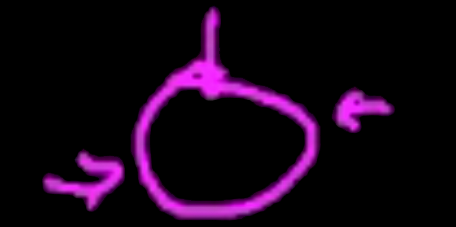 | let's say i have this ballon and it's is filled with water. If you squeezed on this balloon from every side, you would not be able to change the volume of this balloon. No matter what you do you will not be able to change the volume of this ballon. No matter how much force or pressure you put from any side on it. If this was filled with gas |
|
| 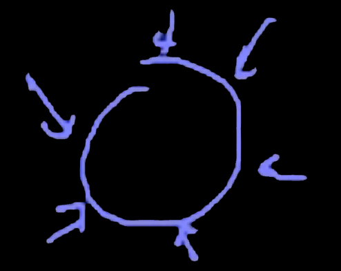 | magenta ballon for gas- you actually could decrease the volume by just increasing the pressure on all sides of the balloon you could acutally squeeze it and make the entire volume smaller. So that's the difference between a liquid and a gas: gas is compressible, liquid isn't. we'll learn later that you can actually turn a liquid into a gas, and a gas into a liquid and a liquid into a solid, we'll learn all about that later, but this is a pretty good working definition. so let's use that and now we're going to actually just focus on |
|
| 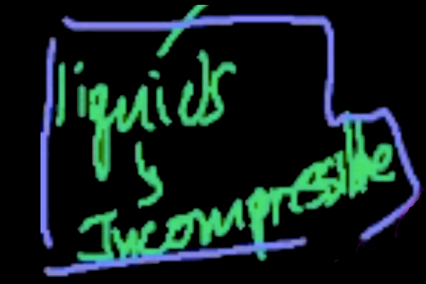 | the liquids to see if we can learn a little bit about liquid motion or maybe even fluid motion in general. |
|
| Let me draw something else | ||
 | ||
 | ||
| Component | Transcript | Time |
| 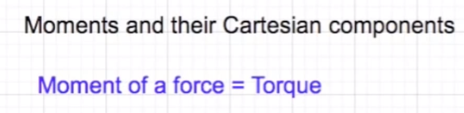 | Now that we have reviewed a few things about forces, let's talk about moments and their Cartesian components. You've seen the concept of moment of a force before in your physics courses, where you probably called it a torque. | 0:25 - 0:38 |
| 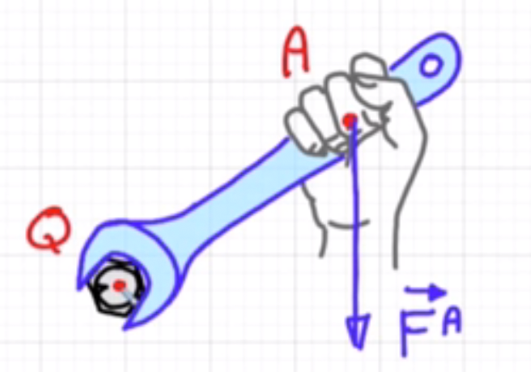 | So let's look at the system with a wrench and a bolt. And let's say that this hand is applying a force at point A on the wrench, and that this force is pointing straight down. So this is going to be our force, FA. If we define a pivot point, Q, right in the middle of the bolt, we can define a position vector that goes from Q to A, and we can call this vector rQA. | 0:38-1:02 |
| What the torque measures is the tendency of force FA to make this system of wrench and bolt rotate with respect to pivot point Q. So this torque will be the moment of force FA with respect to pivot point Q. | 1:02-1:17 | |
| 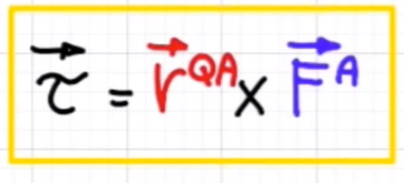 | You probably use the symbol tau in your physics courses to indicate a torque, and you learn that you can obtain the torque as the cross product between the position vector and the force. So how did we calculate this cross product? | 1:17-1:31 |
| 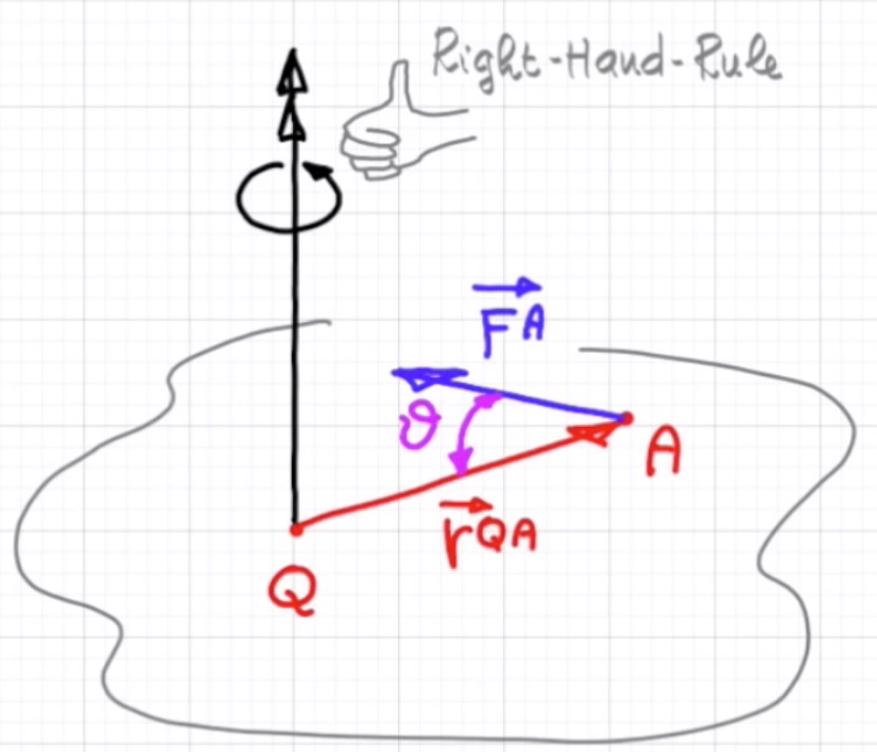 | rQA and FA define a plane, and the axis of the torque will be normal to this plane. The direction will be defined by the right-hand rule, so that if the force makes this system rotate counterclockwise with respect to Q, the direction of the torque will be up. And you can indicate it with the curl, or the double arrow to indicate the direction of rotation. | 1:31-2:01 |
| 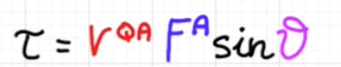 | The magnitude of the torque will be proportional to the magnitude of the position vector rQA and the magnitude of the force FA. But it will also depend on the angle | 2:01-2:09 |
| 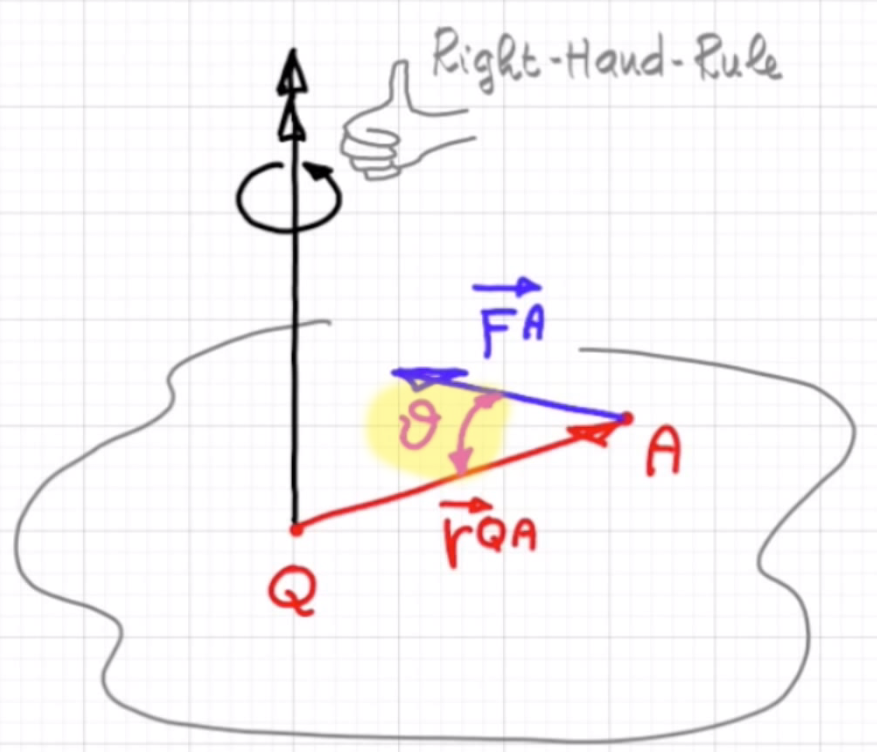 | between the position vector and the force. Let's call this angle theta. And the magnitude of tau can be obtained | 2:09-2:15 |
| 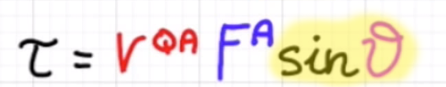 | as rQA FA sin theta. | 2:15-2:21 |
| 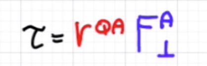 | Another way of writing the same thing is to say that the torque magnitude is equal to the position vector times the component of the force normal to the position vector. | 2:21-2:30 |
April 5. 2014
TF-IDF to identify keywords: TF-IDF on the two lectures "Udacity: Software Testing" and "Khan Academy: Separable Differential Equations." Using the (1) Gutenberg Corpora from NLTK, and using the (2)transcripts of other lectures from the same course as corpora.
| Slide/Corpora | Gutenberg | Other lectures from same course |
| 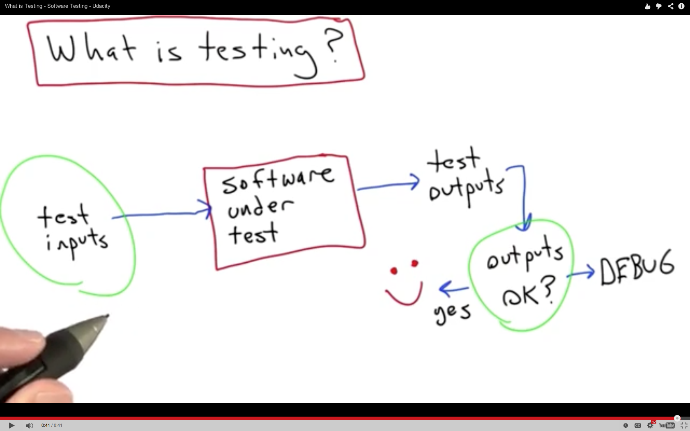Transcript | Gutenberg keywords
|
Course keywords
|
| 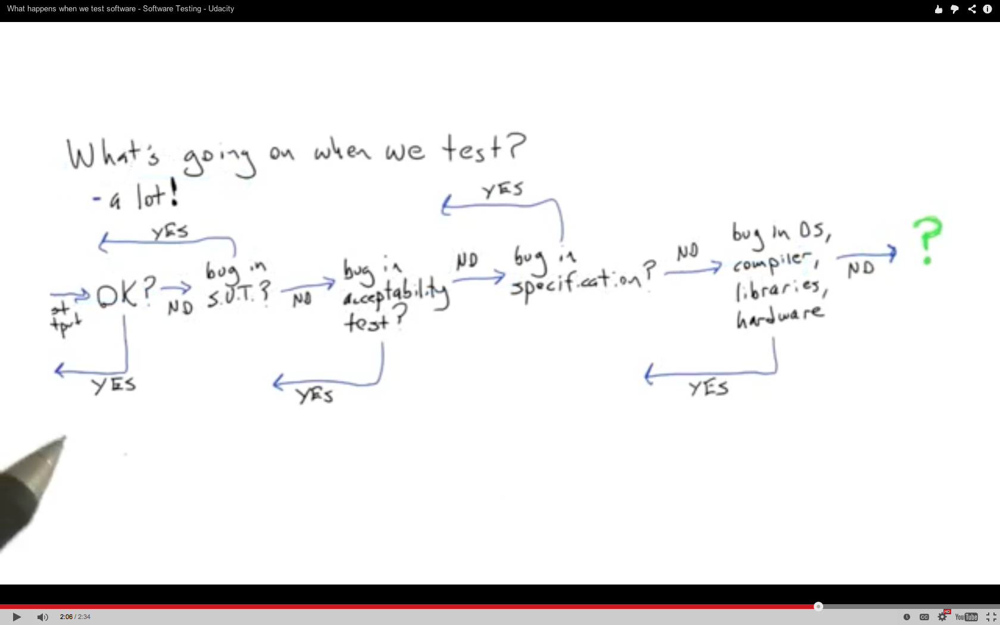Transcript | Gutenberg keywords
|
Course keywords
|
| 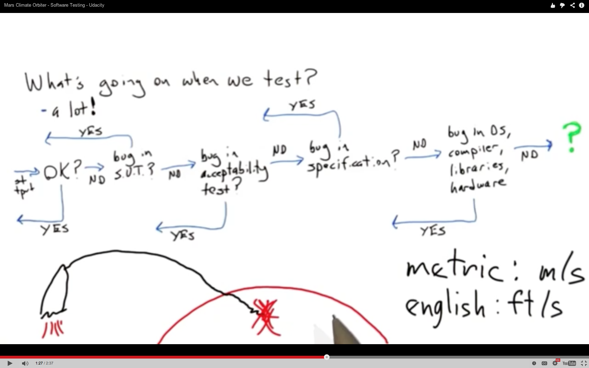Transcript | Gutenberg keywords
|
Course keywords
|
| 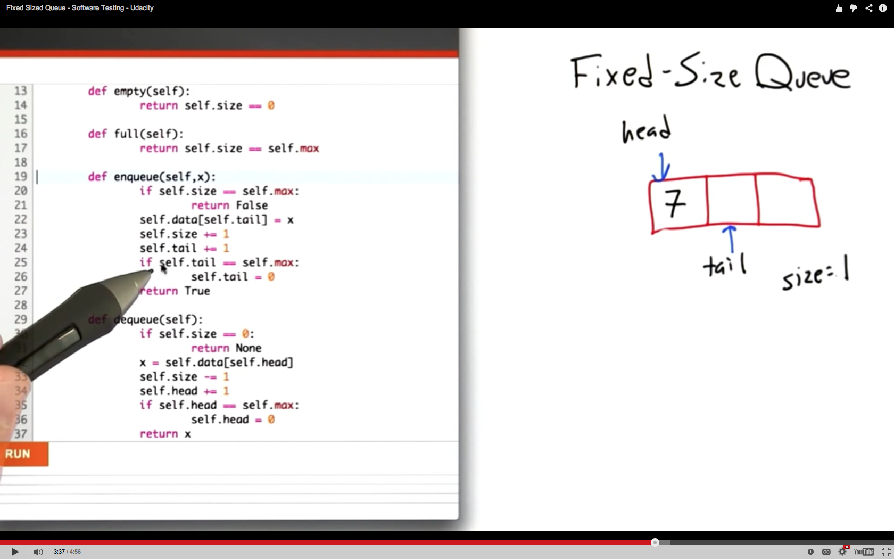Transcript | Gutenberg keywords
| Course keywords
|
| Transcript | Differential Equations, Gutenberg Corpora
|
Differential Equations, Other lectures from series
|
Online Course
The videos or divided into short 2-3 minute segments with interactive quizzes in between.
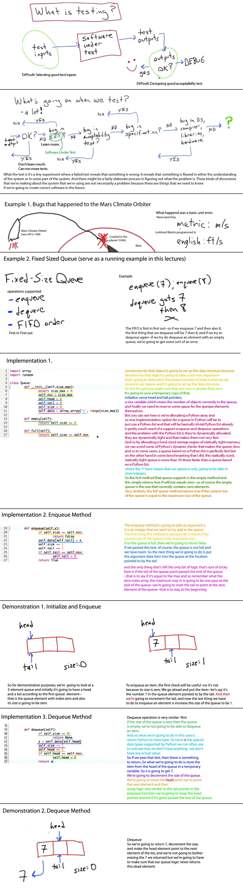
Video on Youtube 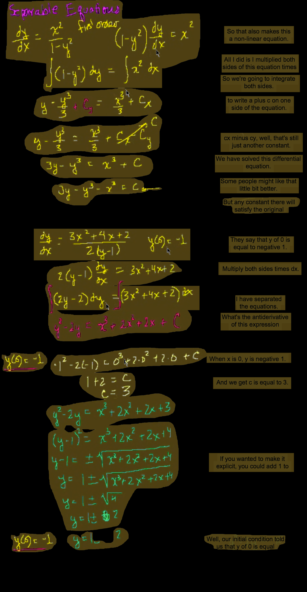 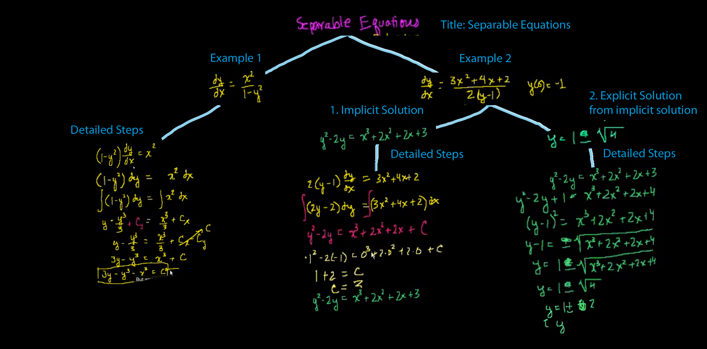
Video on Youtube
Click here for detail: keyframes and transcript
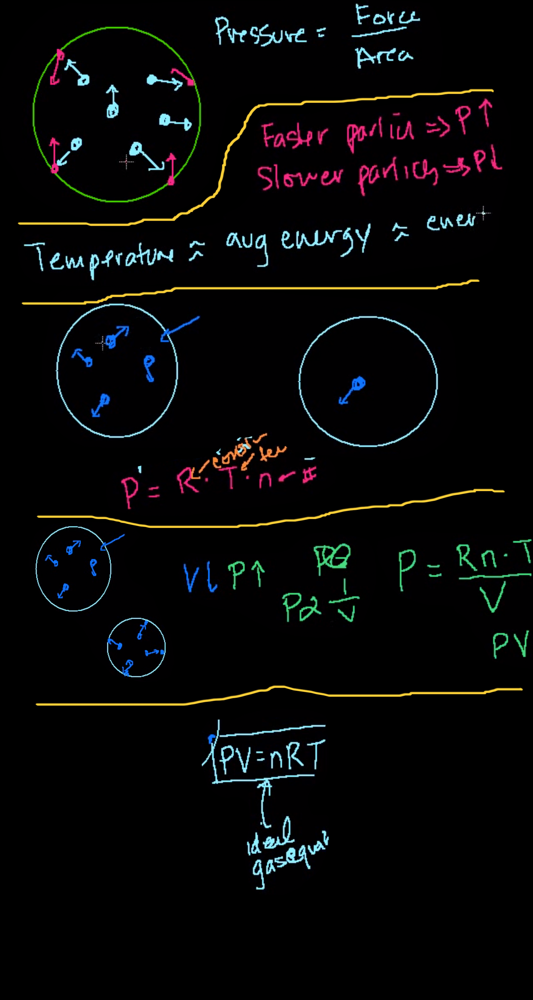